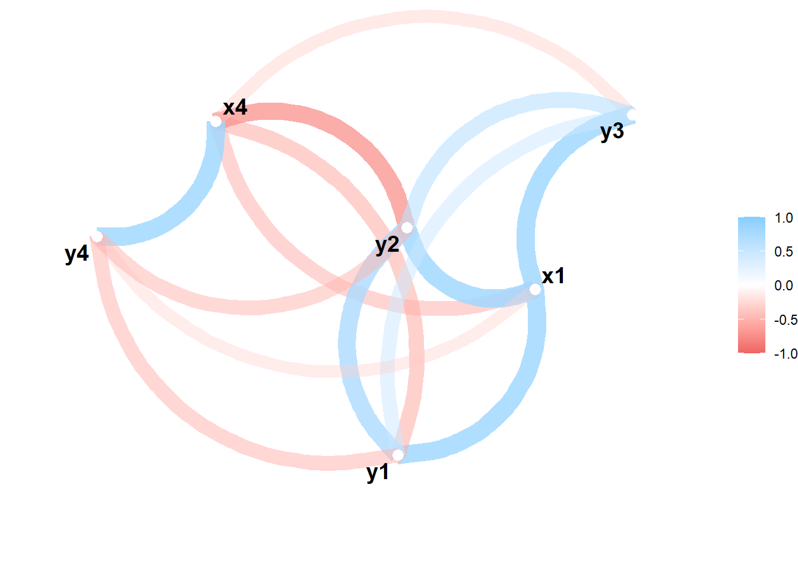
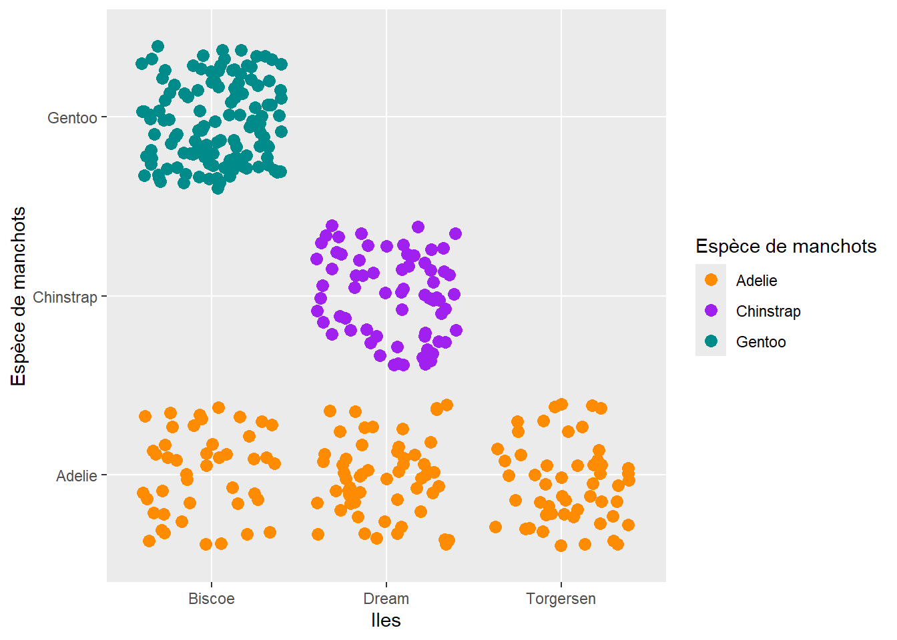

Le chargement a nécessité le package : toolsVID : Analyse exploratoire des données
De la théorie à la pratique (TP 1)
Introduction
Dans ce premier TP, nous allons prendre en main R ainsi que RStudio et Quarto. Pour se faire, nous allons jouer avec plusieurs jeux de données qui nous servirons de base pour faire de l’analyse.
Exercice 1
a. Les données figurent dans le fichier Notes.xlsx qui se trouve dans la page Moodle du cours. Télécharger le fichier et enregistrer les données dans l’objet examen de R en utilisant la librairie readxl.
# A tibble: 82 × 2
Classe Note
<chr> <dbl>
1 A 5.7
2 A 4.1
3 A 5.9
4 A 3.6
5 A 3
6 A 4.4
7 A 2.5
8 A NA
9 A 5.3
10 A 3
# ℹ 72 more rowsb. Reconstituer les boîtes à moustaches en parallèle figurant ci-dessous.
Calculer les écarts-types des trois classes à l’aide des fonctions by() et sd().
, , Age = Child, Survived = No
Sex
Class Male Female
1st 0 0
2nd 0 0
3rd 35 17
Crew 0 0
, , Age = Adult, Survived = No
Sex
Class Male Female
1st 118 4
2nd 154 13
3rd 387 89
Crew 670 3
, , Age = Child, Survived = Yes
Sex
Class Male Female
1st 5 1
2nd 11 13
3rd 13 14
Crew 0 0
, , Age = Adult, Survived = Yes
Sex
Class Male Female
1st 57 140
2nd 14 80
3rd 75 76
Crew 192 20titanic.bar<-barchart(Class~Freq|Sex + Age, data=as.data.frame(Titanic),
groups=Survived, stack=TRUE, layout=c(4,1),
auto.key=list(title="Survived", columns=2))
print(titanic.bar) fibrinogen globulin ESR
1 2.52 38 ESR < 20
2 2.56 31 ESR < 20
3 2.19 33 ESR < 20
4 2.18 31 ESR < 20
5 3.41 37 ESR < 20
6 2.46 36 ESR < 20
7 3.22 38 ESR < 20
8 2.21 37 ESR < 20
9 3.15 39 ESR < 20
10 2.60 41 ESR < 20
11 2.29 36 ESR < 20
12 2.35 29 ESR < 20
16 3.15 36 ESR < 20
18 2.68 34 ESR < 20
19 2.60 38 ESR < 20
20 2.23 37 ESR < 20
21 2.88 30 ESR < 20
22 2.65 46 ESR < 20
24 2.28 36 ESR < 20
25 2.67 39 ESR < 20
26 2.29 31 ESR < 20
27 2.15 31 ESR < 20
28 2.54 28 ESR < 20
30 3.34 30 ESR < 20
31 2.99 36 ESR < 20
32 3.32 35 ESR < 20
13 5.06 37 ESR > 20
14 3.34 32 ESR > 20
15 2.38 37 ESR > 20
17 3.53 46 ESR > 20
23 2.09 44 ESR > 20
29 3.93 32 ESR > 20 globulin
fibrinogen 0.08071681plasma.glm<-glm(ESR~fibrinogen+globulin, data=plasma, family=binomial)
prob<-predict(plasma.glm, type="response")
par(pty="s")
plot(globulin~fibrinogen, data=plasma, xlim=c(2,6), ylim=c(25,55), pch=20,
xlab="fibrinogène", ylab="globuline", main="")
symbols(plasma$fibrinogen, plasma$globulin, circles=prob, add=TRUE, fg="red",
bg="orange")Suite Exo4a
corrplot 0.92 loadedCorrelation computed with
• Method: 'pearson'
• Missing treated using: 'pairwise.complete.obs'
Le chargement a nécessité le package : ggplot2Registered S3 method overwritten by 'GGally':
method from
+.gg ggplot2Exo 5
Attachement du package : 'skimr'L'objet suivant est masqué depuis 'package:corrr':
focus# A tibble: 344 × 8
species island bill_length_mm bill_depth_mm flipper_length_mm body_mass_g
<fct> <fct> <dbl> <dbl> <int> <int>
1 Adelie Torgersen 39.1 18.7 181 3750
2 Adelie Torgersen 39.5 17.4 186 3800
3 Adelie Torgersen 40.3 18 195 3250
4 Adelie Torgersen NA NA NA NA
5 Adelie Torgersen 36.7 19.3 193 3450
6 Adelie Torgersen 39.3 20.6 190 3650
7 Adelie Torgersen 38.9 17.8 181 3625
8 Adelie Torgersen 39.2 19.6 195 4675
9 Adelie Torgersen 34.1 18.1 193 3475
10 Adelie Torgersen 42 20.2 190 4250
# ℹ 334 more rows
# ℹ 2 more variables: sex <fct>, year <int>b. Quelle variable possède le plus de valeurs manquantes ?
| Name | penguins |
| Number of rows | 344 |
| Number of columns | 8 |
| _______________________ | |
| Column type frequency: | |
| factor | 3 |
| numeric | 5 |
| ________________________ | |
| Group variables | None |
Variable type: factor
| skim_variable | n_missing | complete_rate | ordered | n_unique | top_counts |
|---|---|---|---|---|---|
| species | 0 | 1.00 | FALSE | 3 | Ade: 152, Gen: 124, Chi: 68 |
| island | 0 | 1.00 | FALSE | 3 | Bis: 168, Dre: 124, Tor: 52 |
| sex | 11 | 0.97 | FALSE | 2 | mal: 168, fem: 165 |
Variable type: numeric
| skim_variable | n_missing | complete_rate | mean | sd | p0 | p25 | p50 | p75 | p100 | hist |
|---|---|---|---|---|---|---|---|---|---|---|
| bill_length_mm | 2 | 0.99 | 43.92 | 5.46 | 32.1 | 39.23 | 44.45 | 48.5 | 59.6 | ▃▇▇▆▁ |
| bill_depth_mm | 2 | 0.99 | 17.15 | 1.97 | 13.1 | 15.60 | 17.30 | 18.7 | 21.5 | ▅▅▇▇▂ |
| flipper_length_mm | 2 | 0.99 | 200.92 | 14.06 | 172.0 | 190.00 | 197.00 | 213.0 | 231.0 | ▂▇▃▅▂ |
| body_mass_g | 2 | 0.99 | 4201.75 | 801.95 | 2700.0 | 3550.00 | 4050.00 | 4750.0 | 6300.0 | ▃▇▆▃▂ |
| year | 0 | 1.00 | 2008.03 | 0.82 | 2007.0 | 2007.00 | 2008.00 | 2009.0 | 2009.0 | ▇▁▇▁▇ |
C’est la colonne “sex” avec 11 valeurs manquantes
c. Quelle espèce est la plus représentée ?
d. Nous nous proposons de tracer des graphiques de nuages de points à l’aide de la librairie ggplot2 qu’il faut d’abord installer si nécessaire puis activer dans votre session.
ggplot(data = penguins, aes(x = flipper_length_mm, y = bill_length_mm)) +
geom_point(aes(color = species, shape = species), size = 3, alpha = 0.8) +
scale_color_manual(values = c("darkorange","purple","cyan4")) +
labs(title = "Taille des manchots, Palmer Station LTER",
subtitle = "Longueur des nageoires et longueur du bec chez les manchots Adelie, Chinstrap et de Gentoo",
x = "Longueur des nageoire (mm)",
y = "Longueur du bec (mm)",
color = "Espèce de manchots",
shape = "Espèce de manchots") +
theme_bw()Warning: Removed 2 rows containing missing values or values outside the scale range
(`geom_point()`).
Existe-t-il une relation entre la longueur du bec et la longueur des nageoires ? Dans l’affirmative, de quelle nature est-elle ?
- Oui il y a une correlation. plus la longueur des nagoire est grande, plus celle du bec l’est aussi
e. Remarque-t-on des observations inhabituelles dans le graphique de nuage de points ?
- Oui, on peut noté le spécimen “Chinstrap” avec une longueur de nagoire à 180mm et une longueur de bec a 58mm
f. Quelle valeur attribueriez-vous à la longueur des nageoires pour distinguer les manchots de Gentoo des deux autres espèces ?
- les Gentoo ont des nagoires d’une taille supérieur à 205mm
g. Déterminer la corrélation entre la longueur du bec et la longueur des nageoires.
ggplot(data = penguins, aes(x = flipper_length_mm, y = bill_length_mm)) +
geom_point(aes(color = species, shape = island), size = 3, alpha = 0.8) +
scale_color_manual(values = c("darkorange","purple","cyan4")) +
labs(title = "Taille des manchots, Palmer Station LTER",
subtitle = "Longueur des nageoires et longueur du bec chez les manchots Adelie, Chinstrap et de Gentoo",
x = "Longueur des nageoire (mm)",
y = "Longueur du bec (mm)",
color = "Espèce de manchots",
shape = "Espèce de manchots") +
theme_bw()Warning: Removed 2 rows containing missing values or values outside the scale range
(`geom_point()`).Sur quelle île vivent exclusivement les manchots de Gentoo ?
i. Pour répondre à cette question, on peut également construire le graphique de points tracé ci-dessous.
ggplot(penguins, aes(x = island, y = species, color = species)) +
geom_jitter(size = 3) +
scale_color_manual(values = c("darkorange","purple","cyan4")) +
labs(x = "Iles",
y = "Espèce de manchots",
color = "Espèce de manchots")
Les Gentoo vivent tous sur l’ile Biscoe
j. Tracer le nuage de points de la longueur du bec (bill length) versus la longueur des nageoires (flipper length) selon l’espèce et le sexe des manchots en utilisant le composant facet_wrap() de la fonction ggplot().
# Tracer le nuage de points de la longueur du bec versus la longueur des nageoires selon l'espèce et le sexe des manchots
ggplot(penguins, aes(x = bill_length_mm, y = flipper_length_mm, color = sex)) +
geom_point() +
labs(x = "Longueur du bec (mm)", y = "Longueur des nageoires (mm)") +
facet_wrap(~ species, scales = "free") +
ggtitle("Nuage de points : Longueur du bec vs Longueur des nageoires selon l'espèce et le sexe")Warning: Removed 2 rows containing missing values or values outside the scale range
(`geom_point()`).Exo 6
Rows: 85 Columns: 7
── Column specification ────────────────────────────────────────────────────────
Delimiter: ","
chr (4): title, proposed_by, summary, website
dbl (3): year, group, funded
ℹ Use `spec()` to retrieve the full column specification for this data.
ℹ Specify the column types or set `show_col_types = FALSE` to quiet this message.| Name | isc_grant |
| Number of rows | 85 |
| Number of columns | 7 |
| _______________________ | |
| Column type frequency: | |
| character | 4 |
| numeric | 3 |
| ________________________ | |
| Group variables | None |
Variable type: character
| skim_variable | n_missing | complete_rate | min | max | empty | n_unique | whitespace |
|---|---|---|---|---|---|---|---|
| title | 0 | 1.00 | 4 | 120 | 0 | 85 | 0 |
| proposed_by | 0 | 1.00 | 8 | 63 | 0 | 66 | 0 |
| summary | 0 | 1.00 | 31 | 2210 | 0 | 85 | 0 |
| website | 33 | 0.61 | 21 | 224 | 0 | 48 | 0 |
Variable type: numeric
| skim_variable | n_missing | complete_rate | mean | sd | p0 | p25 | p50 | p75 | p100 | hist |
|---|---|---|---|---|---|---|---|---|---|---|
| year | 0 | 1 | 2019.14 | 2.08 | 2016 | 2017 | 2019 | 2021 | 2023 | ▇▆▇▅▅ |
| group | 0 | 1 | 1.40 | 0.49 | 1 | 1 | 1 | 2 | 2 | ▇▁▁▁▅ |
| funded | 0 | 1 | 13781.14 | 11325.80 | 0 | 6000 | 10000 | 16000 | 62400 | ▇▂▁▁▁ |
b. Nous allons construire une carte à cases (treemap) des candidatures à l’obtention d’une bourse du Consortium en utilisant la librairie treemapify de R.
Warning in gg_record(dir = "ISCgrant", device = "png", width = 9, height = 8, :
Writing to a folder that already exists. gg_playback may use more files than
intended!Tracer la carte à cases ci-dessous en complétant les commandes données au-dessous du graphique.
ggplot(isc_grant, aes(area=funded, fill=factor(year), subgroup=year)) +
geom_treemap(radius=unit(0.2, "line"), color="white", size=2) +
geom_treemap_text(aes(label=paste0(title, "\n", proposed_by, "\n\n", scales::dollar(funded))), reflow=TRUE, grow=TRUE, color="white") +
geom_treemap_subgroup_text(aes(label=year), color="white", grow=TRUE, alpha=0.25) +
scale_fill_manual(values=pal) +
labs(
title="Bourses accordées selon les années",
caption="Source: Comité de pilotage du consortium R",
fill="year") +
theme_void()+
theme(
legend.position="none",
plot.background=element_rect(fill="grey99", color=NA),
plot.title=element_text(size=30, face="bold", color="#0D2765", margin=margin(0, 0, 5, 0)),
plot.caption=element_text(color="#0D2765"),
plot.margin=margin(10, 10, 10, 10)
)Warning in geom_treemap_subgroup_text(aes(label = year), color = "white", :
Ignoring unknown aesthetics: label